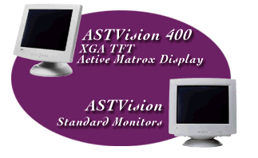

|
 |
|
|
ASTVision 400 Introducing the Monitor That’s Easy to Fit...Anywhere The new flat panel display ASTVision 400 is more than just space-efficient. It features a universal serial bus (USB) connector so that any compatible external devices can be connected directly, instead of via the main chassis. At just 8.2 pounds, with an incredible 2-1/2" profile, it frees up loads of desk space. And, as an XGA TFT Active-Matrix display with exceptional viewing angles, the ASTVision 400 offers a viewing capability of 80 degrees vertically, and 120 degrees horizontally. |
ASTVision Standard Monitors ASTVision Monitors...The Easy Choice With our new and outstanding line-up of choices, there's something for every need. In
fact, all the ASTVision models feature so many smart advancements, they're easy to choose, and to rely on. |